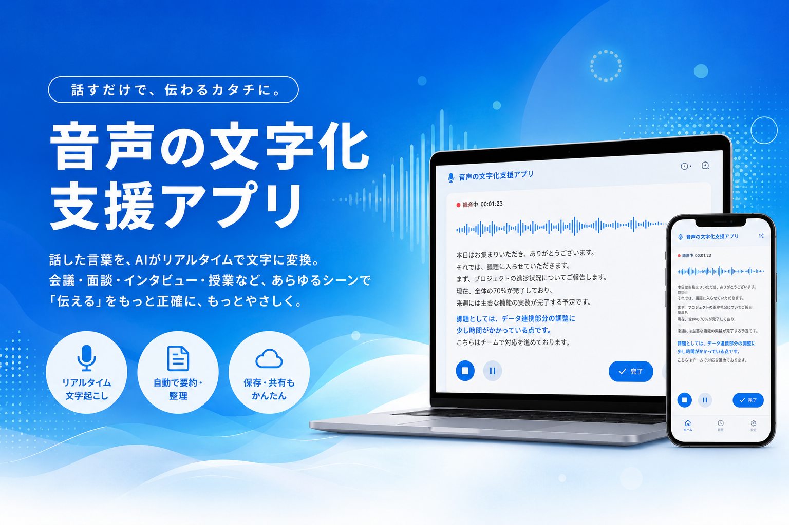

2024年の法改正により、イベント主催者にも合理的配慮の提供が義務化されました。
要約筆記者の手配は時間・費用・調整が必要で、直前対応や小規模イベントでは難しいのが現実です。
要約筆記者の派遣には事前調整・費用・日程確保が必要。直前の依頼や小規模イベントでは対応が難しく、担当者が動けない場面が多かった。
専門スタッフ不要、追加機材も最小限。担当者がセットアップから運用まで一人で行えるため、当日でも柔軟に対応できる。
難しい設定や専門知識は必要ありません。
台本・プログラム・専門用語を登録するだけ。認識精度が上がります。
既存の会場マイクを接続するだけ。機材の購入・業者依頼は不要です。
AIがリアルタイムでテキスト化。会場スクリーンに即時表示されます。
大規模なイベントから小さな社内会議まで、幅広い場面で活躍します。
申込時に配慮希望の連絡があった際、担当者がすぐ対応できます。
聴覚障害のある社員が参加する場でも、追加コストなしに配慮を提供。
予算・人手が少ない小規模な場でも担当者一人で対応できます。